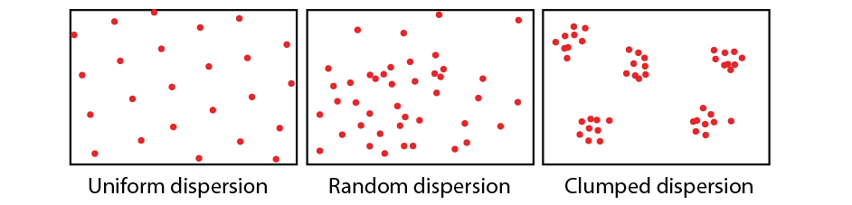

Population is the cluster of the same species in particular space and time. We study the population from its space, number, and genetic characteristics.
There are 3 typical population dispersion or population distribution patterns:

The most important parameter of population is the population size. The number of individuals per unit area or volume is the population density.
Those parameters as the first derivative of population are the primary population parameters, and those parameters have effect on the primary population are secondary population parameters.
There are two approaches to measure the population size and density:
For the immobile and slow-moving organisms such as plant and small animals, we use quadrats method to compute the population size.
For the fast-moving animals such as mammals, birds and fish, the mark-recapture method is ofen used. We capture a sample of species, marked in their body, and release them back, after the sample is uniform mixed with the population, we sample it again, then the population size can be compute by the marked to total ratio.
The primary population parameters include birth rate, death rate, immigration rate and emmigration rate. The natural growth rate is defined as the substraction of birth rate and death rate.
The age/sex distribution of population is the composition of a population in terms of the proportions of individuals of different ages/sex, which can be represented by the population pyramid or age-gender-pyramid.
There are three types of age distribution:
Under the ideal environment (adequate food and space, comfortable climate, no predators, etc.), the size of population will grow as exponential, for the natural growth rate \(\lambda\), \(N_t=N_0\lambda^t\).
However the resource and space is with limit. When the population density grows, the intraspecific competition also increases, and the predators increase, etc. All of the factors lead to the decrease of the natural growth rate. When the birth rate is the same as the death rate, the growth of population stops and the size is kept stationary, which is defined as the carrying capacity or \(K\)-value of that population. The difference and differential equation modelling the growth of population mathematically is given in population_growth_model. This phenomenon is first recognized and described by the ecologist Georgii Gause in the experiment in Paramecium.
Note that the population size is not fixed in the K-value but change around it due to multiple random environment factors.
Two intrepretations of \(K\)-value: